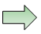
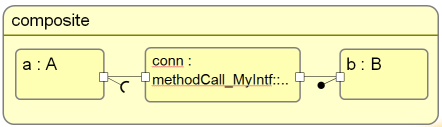
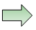
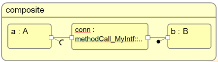

Interaction components and connectors
An interaction component is a component that is responsible for realizing an interaction between two or more
components.
A UML connector denotes a link between two components, or more precisely between two or more parts (or ports of parts)
within a composition. In UML, the connector only denotes that there is a connection, it does not carry further
annotations that characterize the interaction or how it is implemented.
In Qompass, a connector carries additional information (via the FCM profile) about a type or implementation
used for its realization, the interaction component.
An interaction component is quite similar to a standard component: there is an optional separation
between its type and its implementation, it owns ports, it may be a composition of parts typed with
other components.
The main difference is that it needs to be generic, since the interaction component has to adapt itself
to the environment in which it is used, e.g. to the interfaces of ports it connectors.
The following figure shows a connector and the referenced connector component. The tool chain
reifies a connector to a connector component during deployment, as shown in the following figure:
 



Connector matching algorithm
In order to check whether a connector can be applied, we need to find a binding of its formal template
parameter(s) for which all ports of the connector match a port of the application components with which
it is connected. Of course, a single binding must establish matching for all connector ports at the same
time. A match is fulfilled, if either
- The ports have an identical kind and type, and one of the ports is conjugated (i.e its provided and
required interfaces are swapped). The connector port is typically typed with the formal parameter, i.e.
matching is reached if the formal is bound to the same type as the application port.
- The provided interface of one port has a matching required interface of the opposite port and vice versa.
Assuming again,that a port of the connector is typed with the formal parameter of the template, the
calculation is limited to the case of mapping rules that expose the formal parameter directly as
provided or required interface, i.e. that do not create a derived interface that depends on the
formal parameter. Otherwise,
the calculation of the formal parameter would require a reverse execution of the mapping rule
(calculation of port type when a provided or required interface is given). This implies in practice
that connectors with simple ports using ProvideInterface or UseInterface match: the rule is actually
less strong that the first, since it is possible to match ports that have not specifically be designed
for each other. For instance, the PushProducer port for a dataype DT has a required interface with an
operation "push(in data : DT)". A port with the generic UseInterface kind can match the PushProducer
port. Thus, a synchronous call connector s compatible with a PushProducer/PushConsumer port combination.